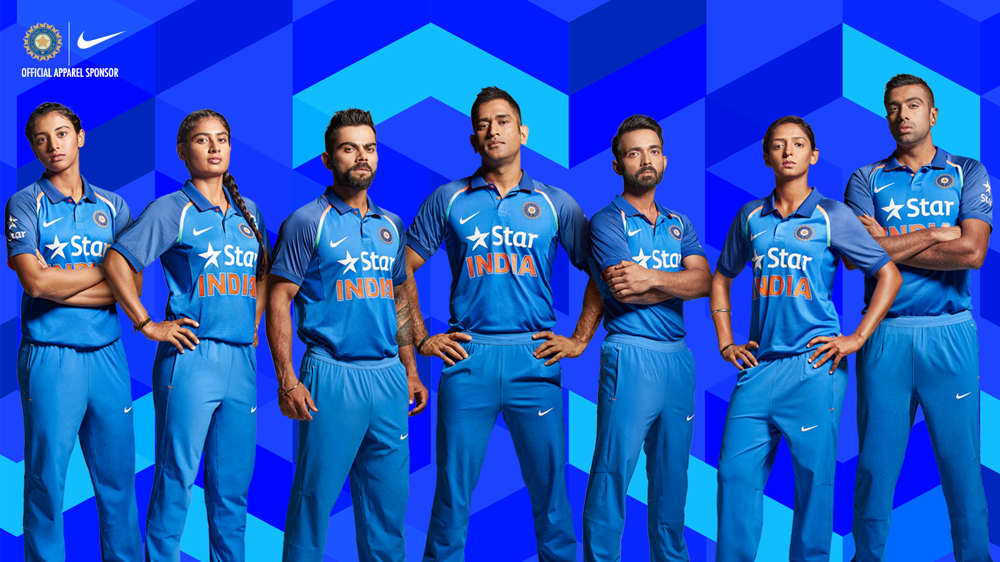

- 1.Rohit Sharma
- 2.Virat Kohli
- 3.MS Dhoni
The India national cricket team, also known as Team India and Men in Blue, represents India in international cricket.
Governed by the Board of Control for Cricket in India (BCCI), it is a full member of the International Cricket Council (ICC) with Test,
One Day International (ODI) and Twenty20 International (T20I) status.
Although cricket was introduced to India by European merchant sailors in the 18th century, and the first cricket club was established in Calcutta in 1792,
India's national cricket team did not play its first Test match until 25 June 1932 at Lord's, becoming the sixth team to be granted Test cricket status.
In its first fifty years of international cricket, India was one of the weaker teams, winning only 35 of the first 196 Test matches it played.
From 1932 India had to wait until 1952, almost 20 years for its first Test victory.
The team, however, gained strength in the 1970s with the emergence of players such as batsmen Sunil Gavaskar and Gundappa Viswanath,
all-rounder Kapil Dev and the Indian spin quartet of Erapalli Prasanna, Srinivas Venkataraghavan, Bhagwat Chandrasekhar and Bishen Singh Bedi.
Early Stages

Traditionally much stronger at home than abroad, the Indian team has improved its overseas form, especially in limited-overs cricket,
since the start of the 21st century, winning Test matches in Australia, England and South Africa.
It has won the Cricket World Cup twice – in 1983 under the captaincy of Kapil Dev and in 2011 under the captaincy of Mahendra Singh Dhoni.
After winning the 2011 World Cup, India became only the third team after West Indies and Australia to have won the World Cup more than once,[8]
and the first cricket team to win the World Cup at home. It also won the 2007 ICC World Twenty20 and 2013 ICC Champions Trophy, under the captaincy of MS Dhoni.
It was also the joint champions of 2002 ICC Champions Trophy, along with Sri Lanka.
Test-Match Status
See also: History of cricket in India from 1918-19 to 1945, History of cricket in India from 1945–46 to 1960, and History of cricket in India from 1960–61 to 1970
India was invited into The Imperial Cricket Council in 1926, and made their debut as a Test playing nation in England in 1932, led by CK Nayudu, who was considered as the best Indian batsman at the time.[14] The one-off Test match between the two sides was played at Lord's in London. The team was not strong in their batting at this point and went on to lose by 158 runs.[15] In 1933, the first Test series in India was played between India and England with matches in Bombay, Calcutta (now Kolkata) and Madras (now Chennai). England won the series 2–0.[16] The Indian team continued to improve throughout the 1930s and '40s but did not achieve an international victory during this period. In the early 1940s, India didn't play any Test cricket due to the Second World War. The team's first series as an independent country was in late 1947 against Sir Donald Bradman's Invincibles (a name given to the Australia national cricket team of that time). It was also the first Test series India played which was not against England. Australia won the five-match series 4–0, with Bradman tormenting the Indian bowling in his final Australian summer.[17]
India subsequently played their first Test series at home not against England against the West Indies in 1948. West Indies won the 5-Test series 1–0.[18]